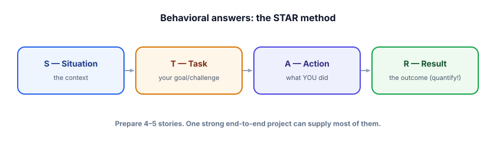

Behavioral & judgment
The behavioral round tests how you think and work, not what you know.
For AI roles it also tests judgment about a powerful technology that is sometimes wrong.
Answer with STAR: the Situation, your Task, the Action you took, and the Result.
Prepare 4 or 5 true stories in advance, with numbers in the results.
Saying “this doesn't need an LLM” when it's true is one of the strongest signals you can give.
A STAR answer is like a short match report. Where and when the game was (situation), what your side needed (task), what you did on the pitch (action), and the final score plus what you would change next time (result).
| In the picture | In the real system |
|---|---|
| Where and when the game was | Situation: brief context, one or two sentences |
| What your side needed | Task: your specific goal or challenge |
| What you did on the pitch | Action: what you did and why, the longest part |
| Final score, and what you'd change | Result: the outcome with a number, plus what you learned |
Where the picture breaks. A match report can praise the whole team. In an interview the action has to be clearly yours (your contribution and your reasoning), or the interviewer can't give you credit for it.
Going deeper
The technical rounds test what you know; the behavioral round tests how you think and work — and for AI roles, it tests judgment about a powerful, fallible technology. This is where strong engineers seal the offer, and where overconfident ones lose it.
Two things this round measures
First, the usual: how you collaborate, handle conflict, learn, and recover from failure — answered with concrete stories. Second, something AI-specific: your judgment about when and how to use this technology responsibly. Interviewers want to see that you’re neither a hype-follower who LLM-ifies everything nor a skeptic who dismisses it — but someone who matches the tool to the problem, respects its limits, and cares about the people affected. That judgment is, increasingly, the differentiator.

Answer behavioral questions with STAR: the Situation (brief context), the Task (your specific goal or challenge), the Action (what you did — emphasize your contribution and reasoning), and the Result (the outcome, quantified where possible, plus what you learned). It keeps answers concrete and complete instead of vague. Prepare 4–5 stories covering: a project you’re proud of, a failure/mistake, a conflict, a time you learned something fast, and a hard technical decision.
The AI-judgment questions
“Tell me about a time an LLM didn’t work as expected. What did you do?”
▸ How to answer
Use STAR with a real failure: e.g., “Our support bot confidently gave a wrong policy (Situation/Task). I traced it, found retrieval missed the right chunk because of bad chunking (Action: diagnosed retrieval vs generation, fixed chunking + added an eval case), and recall@5 and user thumbs-up improved (Result).” The signal: you debug systematically and add a guard so it can’t recur — you don’t just shrug at “the model is unreliable.”
“When would you advise against using an LLM?”
▸ How to answer
When a confident wrong answer is costly and the task is deterministic or safety-critical — exact financial/medical/legal computations, or anything where simpler, reliable code wins. Show you reach for the right tool: “I’d use deterministic code for the calculation and maybe an LLM only for the explanation, with verification.” Recommending against an LLM when appropriate is a major maturity signal — it shows you serve the problem, not the hype.
“How do you think about the risks and ethics of what you build?”
▸ How to answer
Speak concretely, not in platitudes: hallucination harming users (so I ground, cite, and keep humans in the loop for high-stakes), privacy (redact PII, minimize data), bias (test for it in evals), and misuse (guardrails, monitoring). Tie it to practices from this course. Show you treat safety as an engineering responsibility you design for, and that you’d raise concerns rather than ship something harmful to hit a deadline.
“How do you keep up in such a fast-moving field?”
▸ How to answer
Have a real, specific routine: a few sources you follow, hands-on experimentation (you built things — point to them), and a focus on durable fundamentals over chasing every release. The meta-point you can make: because you understand the fundamentals (tokens, RAG, evals, serving), you can evaluate new tools quickly by re-running your evals — so you adopt what measurably helps rather than what’s trendy. That framing shows learning agility grounded in principles.
“What don’t you know yet / what’s a weakness?”
▸ How to answer
Be genuinely honest about a real gap and how you’re addressing it (“I’ve done more RAG than large-scale fine-tuning; I’ve studied LoRA/QLoRA and built a small one, and I’d want mentorship on production training infra”). Confident honesty beats fake perfection — and it mirrors the core lesson of the field: knowing the limits (yours and the model’s) is a strength, not a liability.
An interviewer asks you to design a feature, and the honest best answer is “this doesn’t need an LLM — simple rules are more reliable here.” What should you do?
Asked about a real weakness, what's the strongest move?
- Answer behavioral questions with STAR; prepare 4–5 concrete stories in advance.
- AI roles test judgment: match the tool to the problem, respect limits, care about users.
- For “a time the LLM failed,” show systematic debugging + a guard so it can’t recur.
- Recommending against an LLM when appropriate is a strong maturity signal.
- Discuss safety/ethics concretely, and be honestly self-aware about gaps.
Specific tools and models will change; the judgment to use them well won’t. That’s why this round matters and why it maps onto the whole course. Every track quietly taught judgment: when to use RAG vs fine-tuning vs prompting, when an agent is justified vs over-engineering, how to know something works (evals), what can go wrong (safety), and how to make it affordable (serving). A behavioral round is your chance to show you’ve internalized that — that you think in trade-offs, measure before believing, design for failure, and keep the human impact in view. Those habits outlast any model release, which is exactly why interviewers probe for them.
One closing posture for the whole interview: calibrated confidence. The field rewards people who can do impressive things and are honest about limits — of the models and of themselves. Overclaiming (“LLMs can do anything,” “I know everything”) reads as naive; excessive hedging reads as unsure.
Aim for grounded confidence: “Here’s what I’d build, here’s how I’d know it works, here’s what could go wrong and how I’d handle it, and here’s what I’d want to learn.” That’s the voice of someone who ships real, reliable LLM products — which, if you’ve worked through this course, is exactly who you now are. You have the projects to prove it; now go and use them.
You’re interview-ready across fundamentals, RAG, agents, system design, take-homes, and behavioral — and you already have the capstones from Track 14 to prove it. The last step is landing the role. Next: Track 16, Get Hired.
In one line: Tell a true story in four beats (situation, task, action, result) and make the action clearly yours.